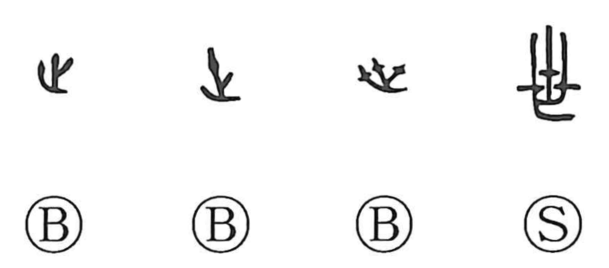

世

Kun: yo, yononaka | On: sei, se
world ・ age ・ generation ・ lifetime
Explanation
世 pictures new shoots emerging from the branches of a tree. The early forms show branching growth, close to 生, which represents a plant coming up. 世 emphasizes the new growth of a tree, while 生 can show the growth of grasses and plants more generally.
The successive appearance of leaves gives an image for successive human generations. A 世 is a generation, an age, or the span of a person's life; it also names the world in which those lives unfold. The related word 葉 means a leaf, and the expressions 万世 and 万葉 can both refer to countless generations.